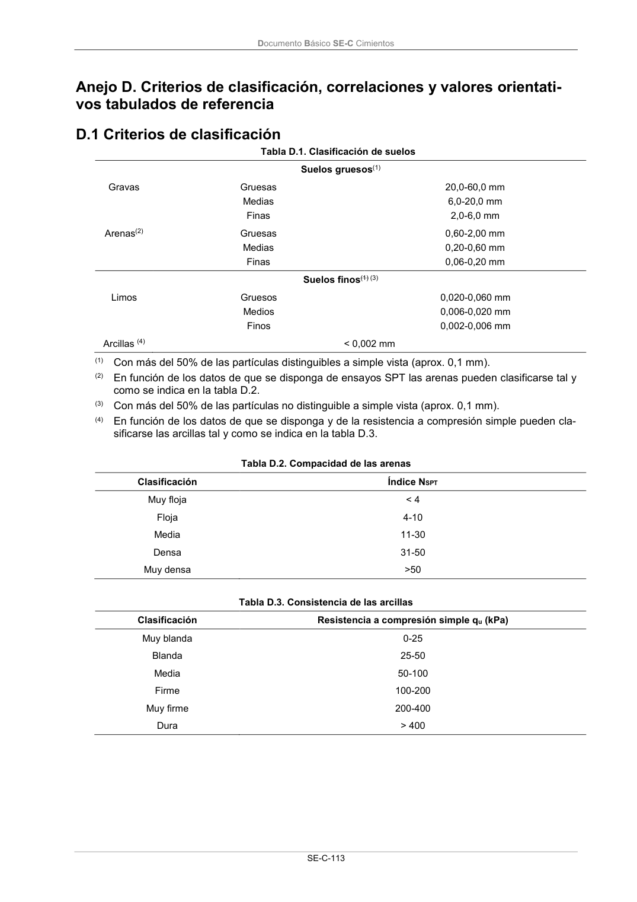

DB-SE-C · Anejo D. Criterios de clasificación, correlaciones y valores orientati- vos tabulados de referencia · versión 2019-12-20 · capa oficial
Formatos: JSON compacto · Markdown · PDF fuente
Ámbito del documento · texto del ámbito · documento y tablas
ID técnico a0242 · PDF pág. 118 · jerarquía no validada por persona · contrastado con el literal de la página 118 (candidato tipográfico); no validado por persona · padre: raíz
Anejo D. Criterios de clasificación, correlaciones y valores orientati- vos tabulados de referencia vos tabulados de referencia

PDF fuente redistribuible: copia fiel enlazada en esta página (SHA256 verificado).